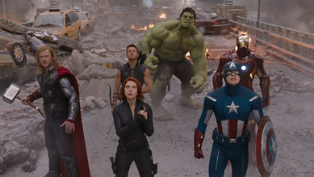

The Avengers è un film del 2012 scritto e diretto da Joss Whedon.
Basato sull'omonimo gruppo di Marvel Comics, è il sesto film del Marvel Cinematic Universe, ultimo della cosiddetta "Fase Uno". È stato prodotto dai Marvel Studios e distribuito da Walt Disney Studios Motion Pictures, ed è interpretato da Robert Downey Jr., Chris Evans, Mark Ruffalo, Chris Hemsworth, Scarlett Johansson, Jeremy Renner, Tom Hiddleston, Stellan Skarsgård e Samuel L. Jackson. In The Avengers, Nick Fury, direttore dello S.H.I.E.L.D., recluta Iron Man, Captain America, Hulk, Thor, Vedova Nera e Occhio di Falco per fermare Loki, fratello adottivo di Thor, che vuole conquistare la Terra con il suo esercito alieno di Chitauri.
Il film ha ottenuto un notevole successo di critica e pubblico, stabilendo vari record di incassi e venendo candidato a svariati premi cinematografici, tra cui l'Oscar 2013 per i migliori effetti speciali.

trama
L'asgardiano Loki incontra l'Altro, il leader di una razza extraterrestre conosciuta come Chitauri. In cambio dell'ottenimento del Tesseract,[N 1] una potente fonte di energia dal potenziale sconosciuto, l'Altro promette di fornire a Loki un esercito per conquistare la Terra. Nick Fury, direttore dello S.H.I.E.L.D., raggiunge un complesso dove il dottor Erik Selvig sta guidando una squadra di studio sul Tesseract, il quale, improvvisamente, apre un varco dimensionale e appare Loki, che impugna uno scettro. Loki uccide gli agenti presenti e compie un incantesimo su Selvig e sull'agente Clint Barton, mettendoli al suo servizio, per poi fuggire con il Tesseract. Fury invia gli agenti Phil Coulson e Natasha Romanoff a localizzare un gruppo di persone, con l'intento di creare una squadra d'azione speciale: gli Avengers. Steve Rogers e Bruce Banner si incontrano sull'Helicarrier, un'enorme portaerei in grado di alzarsi in volo e mimetizzarsi rendendosi invisibile. Intanto Loki manifesta le sue intenzioni: vuole iniziare una guerra con l'esercito dei Chitauri al suo seguito e deve recuperare il Tesseract per colui che gli ha fornito l'esercito e le armi.
Il dio viene individuato dallo S.H.I.E.L.D. a Stoccarda, dove, nel frattempo, Barton riesce a entrare in una stanza contenente iridio, necessario per riuscire ad aprire il portale comunicante coi Chitauri. Dopo un breve scontro con Captain America e la Vedova nera sul Quinjet, Loki viene catturato grazie all'intervento di Iron Man. Tuttavia durante il ritorno alla base, Thor giunge sul Quinjet dello S.H.I.E.L.D. e requisisce con la forza Loki. Iron Man si scontra con Thor, e solo l'intervento di Captain America convince Thor a collaborare con loro. Tornati sull'Helicarrier, Fury rivela al gruppo che da quando è stata scoperta l'esistenza di altri mondi, lo S.H.I.E.L.D. ha utilizzato il Tesseract per scopi militari, per farsi trovare pronti per un possibile scontro con civiltà sconosciute. Nel frattempo, Clint Barton e altri agenti dello S.H.I.E.L.D assaltano l'Helicarrier per liberare Loki, ritrovandosi a combattere contro gli Avengers.
In seguito a un'esplosione, Bruce Banner si trasforma in Hulk, scagliandosi contro la Vedova Nera, che viene salvata dall'intervento di Thor. Dopo una colluttazione tra i due, Hulk precipita dalla base volante mentre tentava di distruggere un cacciabombardiere che lo aveva attaccato. Iron Man e Captain America fanno ripartire i motori dell'Helicarrer, distrutti dai soldati di Loki, che, nel frattempo, viene liberato, espelle dalla nave Thor, uccide l'agente Coulson e fugge nuovamente. Intanto, grazie a Natasha, Occhio di Falco rinviene dall'incantesimo di Loki. La morte dell'agente Coulson crea coesione tra gli eroi e dà loro una giusta motivazione per combattere. Stark intuisce che l'asgardiano vuole portare a termine il suo piano sulla Stark Tower, dove incontra Loki sul tetto. Qui colloquia con Loki per distrarlo mentre indossa un paio di bracciali che comandano a distanza la sua nuova armatura. Loki scaglia Stark giù dalla torre, il quale però si salva chiamando la nuova armatura. Intanto il portale spaziale generato dal Tesseract si apre in cielo, con i Chitauri che assaltano l'isola di Manhattan. Iron Man ne uccide il più possibile, e nel frattempo arrivano in città gli altri supereroi.
Thor raggiunge Loki e prova a farlo ragionare, ma questi lo ferisce e fugge. Benché i Vendicatori stiano avendo la meglio sui nemici, finché il portale rimarrà aperto gli alieni continueranno ad affluire. Hulk raggiunge Loki e lo sconfigge con irrisoria facilità. Il dottor Selvig, intanto, si è ripreso dall'incantesimo di Loki e lavora alla chiusura del portale con Natasha. Ma nel frattempo, il consiglio ha deciso di inviare un missile nucleare per distruggere i nemici insieme alla popolazione residente: Iron Man usa tutte le forze per deviare il missile verso il portale e lo attraversa, colpendo la nave madre dei Chitauri. Stark si trova nello spazio e sviene non riuscendo a respirare, ma fortunatamente spinto dall'onda d'urto dell'esplosione, riesce a tornare sulla Terra, venendo salvato da Hulk. Tutti i Chitauri sulla Terra muoiono in seguito all'esplosione della nave madre. Cessata la minaccia, Thor torna ad Asgard con il Tesseract e Loki prigioniero, mentre gli altri Vendicatori riprendono le rispettive strade.
In una scena a metà dei titoli di coda, l'Altro parla con il suo padrone[N 2] del fallito attacco alla Terra.